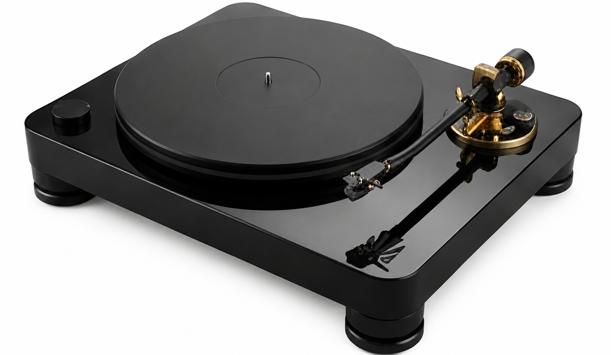

Cards in Transit
Your card is somewhere on this map.
Your Privacy Matters
Built on a Fortress of Silence.
Qubes OS Architecture
Security by Compartmentalization.
Your personal .md files are processed in an isolated sandbox. Using the world's most secure OS, we ensure your data never touches the same system as the public internet.
Tenable Nessus Partner
Continuous Vulnerability Scanning.
We employ enterprise-grade scanning to find and seal threats before they exist. Our site is hardened daily to military standards.
"We do not sell to third parties. Your mind is your property. Our site is simply the studio where it is voiced."
Explore
Choose the door you want to open.
Each worldview holds curated recordings from the public domain — philosophy as it was meant to be heard. Browse until one pulls at you. That pull is where the form begins. The bespoke is something different: a piece written around your life, in a voice made for you alone.
The Worldviews Library


Becoming
Nietzsche
Who are you becoming?
You are the person who suspects the life you're living was designed for someone else — and you're starting to find that unacceptable.
Chapters
Season 1The TD-AC90X Archive
Select Edition
Hover over an archival entry to inspect its physical construction. Move your mouse away to restore the active study loop.

The pinnacle of the library series. Built from solid walnut block and deep balanced alloy, specifically tuned to resonate with the physical dimensions of acoustic and orchestral works.
"An absolute fidelity to mechanical isolation is not a luxury. It is the silence that allows the word to step forward."
The Experiment
Immortality Projects
Becker argued that everything we build — every name we carve, every child we raise, every word we entrust to paper — is an act of defiance against our own erasure.
Members will be able to record the voice, the principles, and the particular phrases that made someone feel unmistakably present. What is left behind will respond — shaped by what you entrusted to it.
Inspired by Ernest Becker · The Denial of Death, 1973